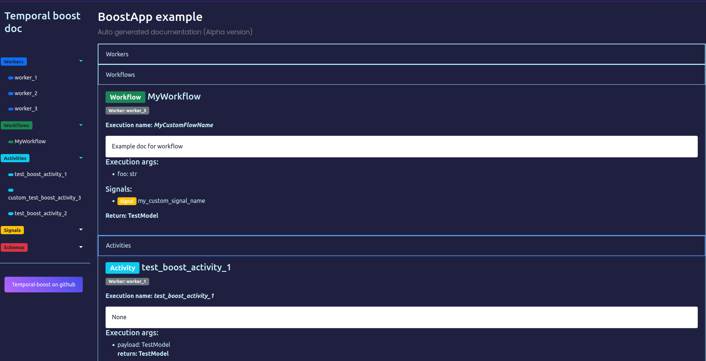

Creating application
Base code example
This`s the base code snippet to start working with the framework. Create BoostApp object, set configuration for an app and run it.
# Creating `BoostApp` object
from temporal_boost import BoostApp, BoostLoggerConfig, BoostOTLPConfig
app: BoostApp = BoostApp(
name="BoostApp example", # Name of the service
temporal_endpoint="localhost:7233", # Temporal endpoint
temporal_namespace="default", # Temporal namespace
logger_config=BoostLoggerConfig(
json=True,
bind_extra={"foo": "bar",},
level="DEBUG",
multiprocess_safe=True
),
otlp_config=BoostOTLPConfig(
otlp_endpoint="otlp-collector",
service_name="example-app"
),
use_pydantic=True # Use special JSON serializer inside Temporal SDK
)
BoostLoggerConfig
BoostLoggerConfig is an object with setting for internal logger, based on loguru. There are the description:
Logs output. Can be io object of filename
sink: typing.TextIO = sys.stdout
Log severity
level: str = "DEBUG"
Internal seriallizer for logs
json: bool = True
We use internal formatter, but ypu can provide anyone
formatter: typing.Callable | str = _default_json_formatter
Enqueue mode of loguru. Use it in async and muliprocess apps
multiprocess_safe: bool = True
Dict, that you can fill with anythind you want. It`ll be added to extra field of log format
bind_extra: dict | None = None
BoostOTLPConfig
Similar to BoostLoggerConfig, BoostOTLPConfig is an object with setting for OTLP tracer. This tracer will be provided for original Tempral SDK tracer too.
OTLP collector endpoint
otlp_endpoint: str
OTLP service name
service_name: str | None = None
Adding temporal workers
For adding worker to the app, you should use add_worker method. There are arguments for it:
def add_worker(
self,
worker_name: str,
task_queue: str,
workflows: list = [],
activities: list = [],
cron_schedule: str | None = None,
cron_runner: typing.Coroutine | None = None,
metrics_endpoint: str | None = None,
description: str = "",
) -> None:
There some prohibited worker name, which are using for system purposes
- all
- internal
worker_name: str
Task queue, there activities and workflows of this worker will`be registered.
task_queue: str
List of workflows for this worker, defaults to []
workflows: list = []
List of activities for this worker, defaults to []
activities: list = []
Cron schedule string, if you want to create cron worker, ex * * * * *
cron_schedule: str | None = None
Workflow run method, which will be executed, if you created cron worker. Required, if cron_schedule is not None
cron_runner: typing.Coroutine | None = None
Prometheus metrics endpoint for this worker. Should looks like 0.0.0.0:9000
metrics_endpoint: str | None = None
Non-nessesary description for the worker
description: str = ""
Examples
app.add_worker(
"my_worker_1",
"my_queue_1",
activities=[my_activity],
metrics_endpoint="0.0.0.0:9000",
description="This workers serves activity my_activity on my_queue_1 and metrics endpoint"
)
app.add_worker(
"worker_2",
"my_queue_2",
workflows=[MyWorkflow],
description="This workers serves workflow MyWorkflow on my_queue_2"
)
app.add_worker(
"worker_3",
"my_queue_3",
workflows=[MyWorkflow2],
activities=[my_activity2],
description="This workers serves workflow MyWorkflow3 and activity my_activity2 on my_queue_3"
)
Adding CRON workers
To execute some workflow with cron schedule, create cron worker like this:
app.add_worker(
"worker_4",
"task_q_4",
workflows=[MyWorkflow],
cron_runner=MyWorkflow.run,
cron_schedule="* * * * *"
)
About arguments
Here, cron_runner is a corutine, which will be started with cron_schedule
Adding internal worker
Now, internal worker can be used for autogenerated documentation for Temporal objects
In future, opportunities of this object will be expanded
Now, go to http://localhost:8888/doc and use autogenerated documentation for workers, workflows, activities and other temporal objects.
This documentation as a prototype in Alpha version

Adding ASGI workers
To add FastAPI application as an ASGI worker to your application at first you should add something like this:
Now, you can add it to Temporal-boost application:
This application will be executed with Hypercorn + Trio in asyncio runtime